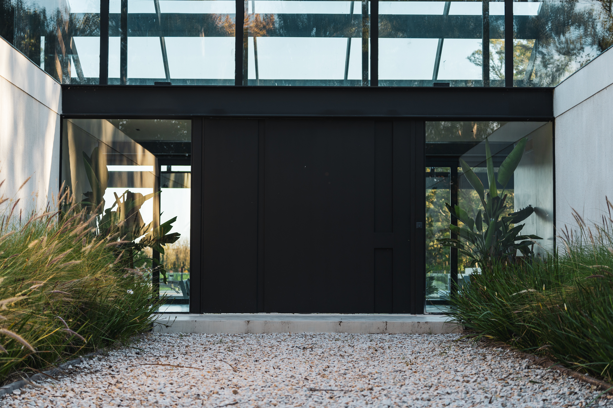
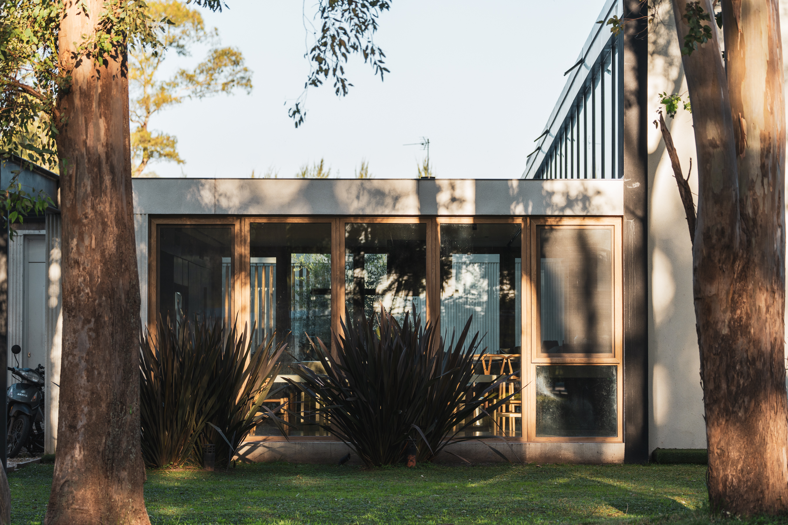
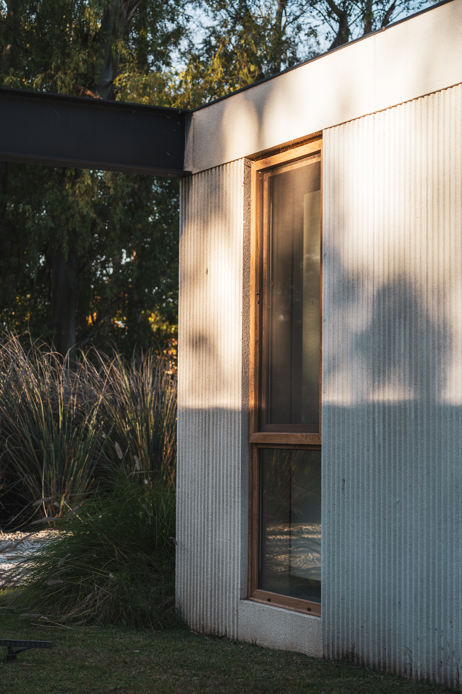
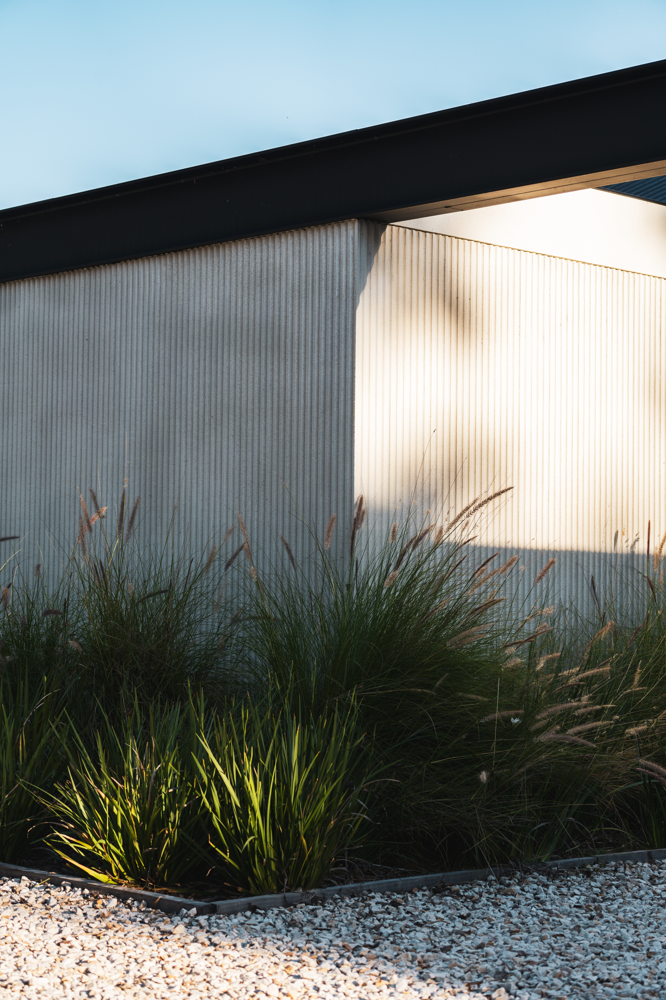
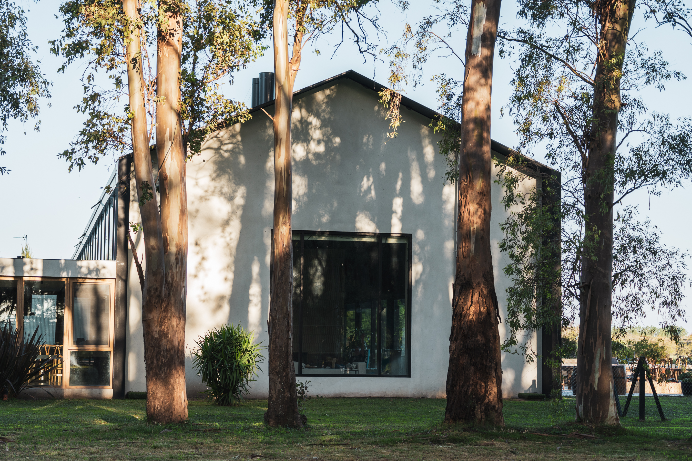
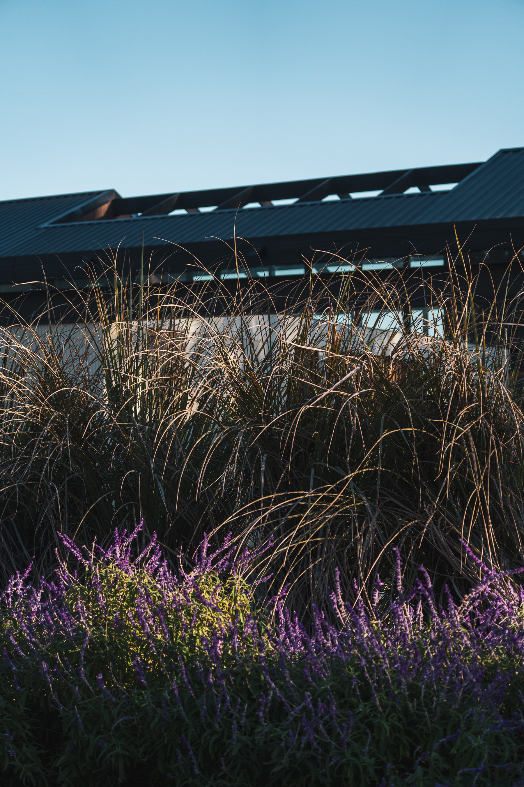
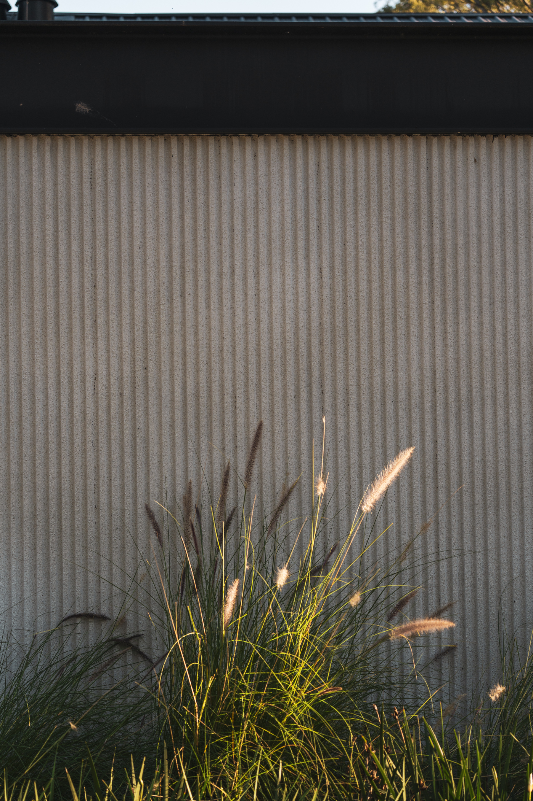

Casa de Campo
Haras San Pablo
Donde la vida familiar moderna
se encuentra con la naturaleza
UBICACIÓN /
Buenos Aires,
Argentina
CLIMA /
Templado Subtropical
BIOMA /
Pampa
TERRENO /
3200 m²
ÁREA CUBIERTA /
950 m²


Una serie de estrategias de respuesta climática permiten generar un microclima interior de condiciones agradables, controladas y estables.
Estratégicamente orientada, térmicamente eficiente y correctamente aislada, la cabaña funciona como un refugio que se habita como un hogar.
Discreta hacia el exterior, su arquitectura revela un interior rico en detalles que aportan calidez y contención frente a la inmensidad del paisaje.
Del clima crudo y su rigor, surge la calidez del hogar.



El desarrollo de esta vivienda surge de la dualidad compleja del paisaje andino-patagónico.
Conviven dos realidades: la ladera de montaña, expuesta y ventosa, junto a la densidad de los bosques húmedos de coihue, lenga y ñire.
La arquitectura evita intervenir en la flora nativa, de gran valor ecológico. Para preservar el bosque, la implantación se resuelve en un área abierta sin vegetación. Este sitio, expuesto a un clima dinámico y hostil demanda un diseño adaptado al viento, las bajas temperaturas, las lluvias y nevadas.
La paleta de materiales de la envolvente se inspira en las texturas y colores de la montaña nevada: las piedras, los troncos plateados y la vegetación de altura.

